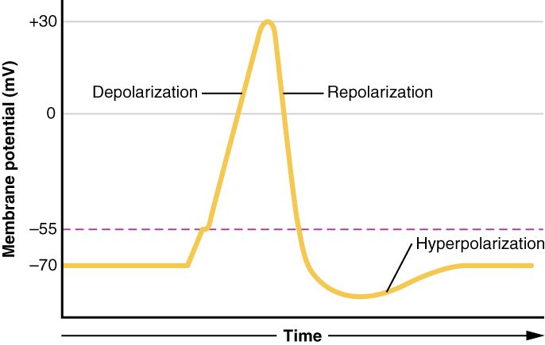

An action potential lasts about two milliseconds, yet every phase of it is set by the opening and closing of two kinds of channel. This page explains the action potential phases on a graph, with the numbers you are expected to know: the gates inside the voltage-gated sodium channel, why the potassium channels are late, the absolute and relative refractory periods, and how myelin turns slow continuous conduction into fast saltatory conduction. It ends with what happens when myelin is lost, as in multiple sclerosis.
Where you are starting from
In the Foundations topic on electrical signals you met the short version. A neuron rests at about −70 mV. A graded potential that brings the membrane to threshold, about −55 mV, opens voltage-gated sodium channels. Sodium rushes in and the inside swings to about +30 mV. Sodium channels then close on their own, slow voltage-gated potassium channels let potassium out, and the membrane returns to rest after a brief dip below it. The response is all-or-none, and a refractory period keeps it moving one way along the axon.
That version tells you what happens. This page shows why each step happens when it does, which is what lets you predict what a drug, a toxin or a disease will do.
The sodium channel has two gates
Picture a doorway with two doors: an outer door that swings open when you push it, and an inner door on a timer that swings shut a moment after the outer one opens. People can pass only while both doors are open. Once the timer door has shut, pushing the outer door does nothing until someone resets the timer.
The voltage-gated sodium channel works the same way. It has two gates, and sodium can pass only when both are open (Figure 1):
- The activation gate is part of the channel protein that senses voltage. At rest it is shut. Depolarization swings it open, fast: within a fraction of a millisecond.
- The inactivation gate is a loop of the same protein on the inner (cytosol) side. At rest it hangs open. Depolarization also makes it swing into the inner mouth of the pore and plug it, but more slowly: it closes about a millisecond after the activation gate opens. (In- = not; inactivation = making inactive.)
That gives the channel three states:
- Closed (resting). Activation gate shut, inactivation gate open. No sodium flows, but the channel is ready: a depolarization can open it.
- Open. Both gates open. Sodium rushes in. This lasts well under a millisecond.
- Inactivated. Activation gate still open, inactivation gate plugging the pore. No sodium flows, and the channel cannot be opened by any depolarization, however strong.
Sodium channel inactivation is the move from open to inactivated. The way back is the key point: an inactivated channel returns to the closed, ready state only when the membrane repolarizes. Repolarization swings the activation gate shut and lets the inactivation gate swing out of the pore. That reset takes a few milliseconds, and it cannot happen while the membrane stays depolarized.
The potassium channel is the late one
The voltage-gated potassium channel of an axon has one gate and no fast inactivation. Depolarization opens it too, but slowly: it opens about when the sodium channels are inactivating, which is why it is often called the delayed potassium channel. It is also slow to close once the membrane repolarizes.
| Voltage-gated sodium channel | Voltage-gated potassium channel | |
|---|---|---|
| Gates | Two: activation and inactivation | One (no fast inactivation) |
| Opens in response to | Depolarization | Depolarization |
| Speed of opening | Fast: a fraction of a millisecond | Slow: about a millisecond |
| What ends the flow | The inactivation gate plugs the pore, even while depolarized | The gate closes slowly after repolarization |
| Ion movement when open | Sodium flows in | Potassium flows out |
| Effect on the membrane | Depolarizes it (the rising phase) | Repolarizes it, then overshoots below rest |
The phases on the graph, with numbers
Figure 2 is the graph to know. Follow the numbered phases and match each to the channels.
- Rest, −70 mV. Sodium channels closed and ready, voltage-gated potassium channels closed. Potassium leak channels hold the resting potential.
- Depolarization to threshold, −70 to −55 mV. A graded depolarization spreads to the trigger zone, the initial segment of the axon just beyond the axon hillock. That membrane is packed with sodium channels. As the membrane climbs, a few sodium channels open.
- Rising phase, −55 to about +30 mV, in about half a millisecond. At threshold, sodium entering outruns potassium leaving. Each bit of depolarization opens more sodium channels, which lets in more sodium, which depolarizes further: a positive feedback loop. The part above 0 mV, where the inside is actually positive, is called the overshoot.
- Falling phase, +30 back to −70 mV. Two things happen together. Sodium channels inactivate, so sodium stops entering. Delayed potassium channels are now open, so potassium flows out. The membrane repolarizes.
- Afterhyperpolarization, down to about −80 mV. The potassium channels are slow to close, so for a few milliseconds potassium keeps leaving and the membrane sits below rest, drifting toward potassium's equilibrium potential of about −90 mV. (After- + hyper- = beyond: the dip beyond rest that comes after the spike.)
- Return to rest. The potassium channels close, and the leak channels bring the membrane back to −70 mV.
![A graph of a neuron membrane potential in millivolts against time in milliseconds, from 0 to 6 ms, with six numbered phases. 1: rest at minus 70. 2: after a stimulus at 0.5 ms, depolarization to the threshold line at minus 55, reached at about 0.9 ms. 3: the rising phase, up to a peak of about plus 30 at 1.4 ms. 4: the falling phase, back to minus 70 by about 2.2 ms. 5: the afterhyperpolarization, a dip to about minus 80 near 2.8 ms. 6: return to rest at minus 70 by about 5 ms. A shaded band from about 0.9 to 2.1 ms marks the absolute refractory period, and a second band from about 2.1 to 4.8 ms marks the relative refractory period.](../figures/neuron-ap-refractory.svg)
Why does the peak stop near +30 mV instead of reaching sodium's equilibrium potential of about +60 mV? Because the rise is cut off from both sides at once: sodium channels inactivate, ending the inward flow, just as the potassium channels open and start the outward flow. A drug that stopped inactivation, or a toxin that blocked the potassium channels, would make the spike taller or longer. (The OpenStax graph in Figure 3 labels the same curve with the older names: depolarization, repolarization and hyperpolarization.)

| Phase | Membrane potential | Sodium channels | Potassium channels | Main ion movement |
|---|---|---|---|---|
| Rest | −70 mV | Closed, ready | Closed (leak channels open) | Small potassium leak out |
| Rising phase | −55 to +30 mV | Open | Mostly still closed | Sodium in |
| Falling phase | +30 to −70 mV | Inactivated | Open | Potassium out |
| Afterhyperpolarization | Down to about −80 mV | Resetting to closed | Still open, closing slowly | Extra potassium out |
Threshold and all-or-none
Threshold is not a magic number. It is the voltage at which inward sodium flow first exceeds outward potassium flow, so the positive feedback takes over. In most neurons that is near −55 mV, but it rises when fewer sodium channels are ready to open. That is why a partly blocked or partly inactivated axon needs a bigger stimulus.
Once the feedback loop starts, it runs until the sodium channels inactivate. The size of the spike is set by the channels and the ion gradients, not by the stimulus. That is the all-or-none rule. A stimulus below threshold (subthreshold) gives only a graded potential that fades. A stimulus at or above threshold gives the full spike. A much stronger stimulus does not give a bigger spike; it holds the trigger zone above threshold for longer, so the neuron fires again as soon as each refractory period allows, and the firing rate rises.
| Graded potential | Action potential | |
|---|---|---|
| Size | Proportional to stimulus strength | All-or-none, about 100 mV from rest to peak |
| Direction | Depolarizing or hyperpolarizing | Always depolarizing, then repolarizing |
| Threshold | None | Starts only at threshold |
| Channels | Ligand-gated, mechanically gated and others | Voltage-gated sodium and potassium channels |
| Over distance | Shrinks within a millimeter or two | Regenerated at full size |
| Refractory period | None; two can add together | Yes; two cannot add together |
| Where on a neuron | Dendrites and cell body | Trigger zone and axon |
Absolute and relative refractory periods
The refractory period you met in Foundations has two parts, and the sodium channel states explain both (Figure 2).
- Absolute refractory period. From threshold through most of the falling phase, about 1 ms. Every sodium channel is either already open or inactivated. No stimulus, however strong, can start a second action potential, because there are no ready channels to open.
- Relative refractory period. From late in the falling phase through the afterhyperpolarization, a few milliseconds. Some sodium channels have reset, so a second action potential is possible, but only with a stronger-than-normal stimulus. Two things make it harder: fewer sodium channels are ready, and the still-open potassium channels hold the membrane below rest, farther from threshold. An action potential fired in this window is also a little smaller.
(Absolute = complete, without exception; relative = compared with normal.)
The absolute refractory period sets the ceiling on firing rate. Two action potentials can be no closer together than one absolute refractory period.
Worked example 1: the highest possible firing rate
Problem. A neuron's absolute refractory period is 2 ms. What is the highest rate at which it could possibly fire?
- Find the shortest gap between spikes. A new spike cannot start until the absolute refractory period ends, so the shortest gap is 2 ms.
- Convert to seconds. 2 ms = 0.002 s.
- Count how many gaps fit in one second. 1 s ÷ 0.002 s = 500.
Answer. At most 500 action potentials per second. Real neurons fire below this ceiling, because a spike in the relative refractory period needs an unusually strong stimulus.
The refractory period also explains one-way travel, which comes next.
Propagation: continuous conduction
An action potential travels because sodium entering one patch of axon spreads as a small current along the inside and depolarizes the next patch to threshold. The patch behind is in its absolute refractory period, so it cannot fire again, and the signal moves only forward.
In an unmyelinated axon, voltage-gated channels line the whole membrane, so every patch fires in turn, each one next to the last. This is continuous conduction: the action potential creeps along the axon like a flame along a fuse. It is slow, because each tiny patch must reach threshold and fire before the next can start, and it is costly, because sodium enters and potassium leaves along the whole length.
Saltatory conduction
Most of your faster axons are wrapped in myelin, made by Schwann cells in the PNS and oligodendrocytes in the CNS. Myelin is many layers of membrane, so it insulates: very little current leaks out through it. Between the wrapped segments are the nodes of Ranvier, short gaps about 1 µm long where the axon membrane is bare. Voltage-gated sodium channels are packed at the nodes and very sparse under the myelin.
That arrangement changes how the signal travels (Figure 4):
- An action potential fires at one node, and sodium rushes in.
- The current flows quickly along the inside of the axon under the myelin, losing little through the insulated wall.
- It reaches the next node, about a millimeter away, still strong enough to bring it to threshold.
- That node fires a full action potential, and the cycle repeats.
The action potential is regenerated only at the nodes, so it seems to leap from node to node. This is saltatory conduction (Latin saltare, to leap or dance). Nothing literally jumps: current flows the whole way through the axon, but the slow step, a patch of membrane firing, happens only at the nodes.
Saltatory conduction has two advantages. It is fast, and it is cheap: sodium and potassium cross the membrane only at the nodes, so the sodium–potassium pumps have far less to restore after each signal.
| Continuous conduction | Saltatory conduction | |
|---|---|---|
| Type of axon | Unmyelinated | Myelinated |
| Where voltage-gated sodium channels sit | Along the whole membrane | Packed at the nodes of Ranvier |
| Where the action potential is regenerated | At every patch of membrane | Only at the nodes |
| Typical speed | About 0.5 to 2 m/s | About 5 to 120 m/s |
| Energy cost per signal | Higher: ions cross along the whole length | Lower: ions cross only at the nodes |
| Examples | Thin fibers carrying slow, dull pain and many autonomic fibers | Motor neurons to skeletal muscle; fibers for touch and body position |
What sets conduction velocity
Conduction velocity is the speed at which an action potential travels along an axon, in meters per second (velocitas = speed). It ranges from about 0.5 m/s in the thinnest unmyelinated fibers to about 120 m/s in the widest myelinated ones. Three things set it:
- Axon diameter. A wider axon has less internal resistance, the same way a wider pipe carries more flow. Current spreads farther inside before leaking out, so patches farther ahead reach threshold sooner.
- Myelination. Myelin stops current from leaking out between nodes and lets the membrane skip the slow firing step along most of its length. This is the bigger effect: a myelinated axon about 10 µm wide conducts faster than an unmyelinated squid axon fifty times wider.
- Temperature. Channels open and close faster when warm. Cooling slows conduction, which is one reason an ice pack numbs a sprain.
Worked example 2: how long a signal takes to arrive
Problem. You step on a tack. Touch information from your foot travels 1.0 m to your spinal cord on myelinated fibers conducting at 50 m/s. A slow, aching signal from the same spot travels the same distance on unmyelinated fibers conducting at 1 m/s. How long does each take?
- Write the relationship. Time = distance ÷ velocity.
- Myelinated fiber. 1.0 m ÷ 50 m/s = 0.02 s = 20 ms.
- Unmyelinated fiber. 1.0 m ÷ 1 m/s = 1.0 s = 1,000 ms.
- Compare. 1,000 ÷ 20 = 50.
Answer. 20 ms on the myelinated fiber and a full second on the unmyelinated one: fifty times longer. That is why you feel the sharp contact first and the dull ache a moment later.
Demyelinating disease
A demyelinating disease is one in which myelin is damaged or lost (de- = remove, myel- = marrow, the root of myelin; -ation = process). Demyelination leaves a stretch of bare internode, the axon membrane that used to lie under the myelin. That stretch has few sodium channels and now leaks current. So:
- Current from the last healthy node leaks out across the bare stretch.
- Less of it reaches the next node, which depolarizes more slowly.
- If the next node still reaches threshold, the signal is delayed. If it does not, the signal stops there: conduction block.
The commonest demyelinating disease is multiple sclerosis (MS; scler- = hard, -osis = condition), named for the many hardened scars it leaves in the brain and spinal cord. In MS, the immune system attacks the myelin made by oligodendrocytes in the CNS. Symptoms depend on which pathways are hit: blurred or painful vision in one eye, numbness or tingling, weakness, poor balance and fatigue. They typically come and go, because inflammation settles, some myelin is repaired, and demyelinated axons can add sodium channels along the bare stretch, which lets some of them conduct again, continuously and slowly.
Many people with MS notice that heat, from a hot shower or exercise, briefly worsens their symptoms. Warmth makes sodium channels inactivate sooner, so each action potential carries less current. In a healthy axon there is plenty to spare. In a demyelinated axon that was barely reaching threshold at the next node, the small loss tips it into conduction block. Cooling down reverses it.
Predicting what drugs, toxins and potassium do
Once you know the channel states, you can reason out any change.
- Local anesthetics such as lidocaine enter the axon and block voltage-gated sodium channels from the inside. With fewer channels available, threshold rises and action potentials fail, so signals from the numbed area do not reach the brain.
- Tetrodotoxin, the poison in pufferfish, plugs the outer mouth of the sodium channel. Nerves to the muscles, including the breathing muscles, stop conducting. The resting potential barely changes, because sodium channels are closed at rest anyway.
- Blocking voltage-gated potassium channels slows the falling phase, so each action potential lasts longer.
- Hyperkalemia (high blood potassium) shows why time matters. A modest rise makes the potassium gradient smaller, so the resting potential moves a few millivolts closer to threshold: at first, neurons and muscle fibers fire more easily. If potassium rises further and stays high, the membrane stays partly depolarized for a long time. More and more sodium channels drift into the inactivated state and cannot reset, because resetting needs repolarization. Fewer ready channels means a higher threshold and smaller or failed action potentials. Excitability, which first rose, now falls. That is the weakness and dangerous heart rhythm of severe hyperkalemia.